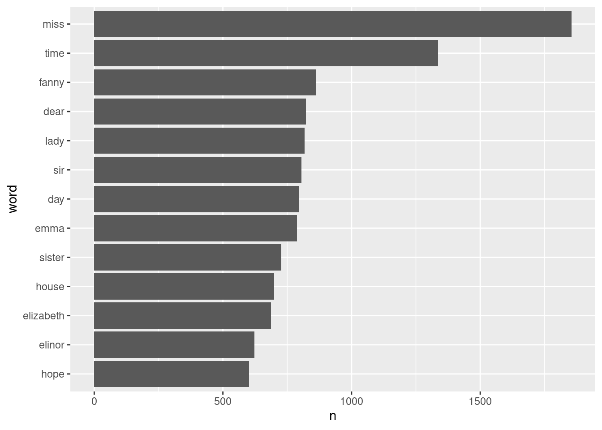
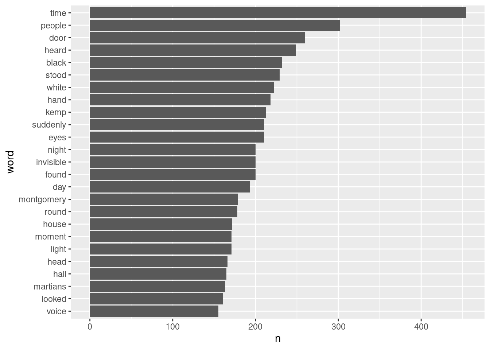
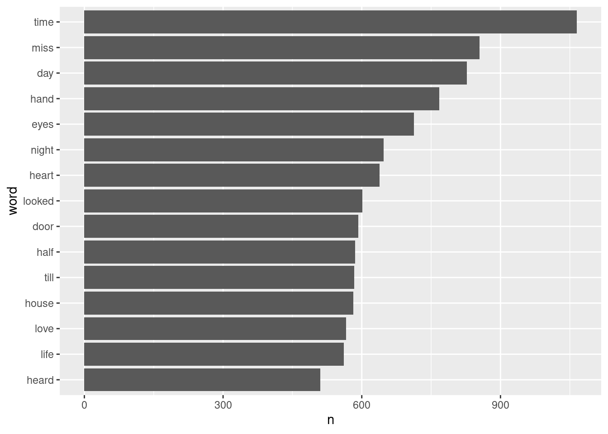
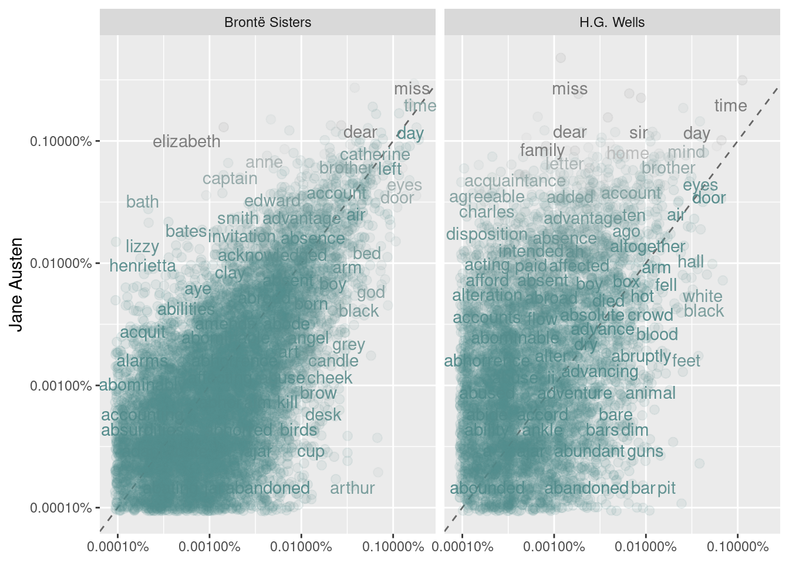

Mineração de Textos - Uma Abordagem Tidy
list.of.packages <- c("tidyverse", "gutenbergr", "textdata")
new.packages <- list.of.packages[!(list.of.packages %in% installed.packages()[,"Package"])]
if(length(new.packages)) install.packages(new.packages)Esse texto é totalmente baseado no livro disponível no livro gratuito Text Mining with R
1 O formato tidy para texto
Usando o princípio tidy para dados é muito útiol pois torna a manipulação de dados mais simples e efetivas, isso também serve para dados textuais, a estrutura tidy tem a seguinte estrutura:
- Cada variável é uma coluna;
- Cada observação é uma linha;
- Cada variável deve possuir apenas um tipo.
Sendo assim, é definido que o formato tidy para texto é uma tabela com um token por linha, o token é a unidade minima de análise, como por exemplo palavras, estamos interessados em utilizar para uma análisem e tokenização é o processo de separar o texto em tokens.
library(magrittr)
knit_print.data.frame <- knitr::kable
text <- c("Because I could not stop for Death -",
"He kindly stopped for me -",
"The Carriage held but just Ourselves -",
"and Immortality")
text## [1] "Because I could not stop for Death -"
## [2] "He kindly stopped for me -"
## [3] "The Carriage held but just Ourselves -"
## [4] "and Immortality"text_df <- tibble::tibble(line = 1:4, text = text)
text_df## # A tibble: 4 x 2
## line text
## <int> <chr>
## 1 1 Because I could not stop for Death -
## 2 2 He kindly stopped for me -
## 3 3 The Carriage held but just Ourselves -
## 4 4 and Immortalitylibrary(tidytext)
text_df %>%
tidytext::unnest_tokens(
.,
output = word,
input = text,
token = "words"
)## # A tibble: 20 x 2
## line word
## <int> <chr>
## 1 1 because
## 2 1 i
## 3 1 could
## 4 1 not
## 5 1 stop
## 6 1 for
## 7 1 death
## 8 2 he
## 9 2 kindly
## 10 2 stopped
## 11 2 for
## 12 2 me
## 13 3 the
## 14 3 carriage
## 15 3 held
## 16 3 but
## 17 3 just
## 18 3 ourselves
## 19 4 and
## 20 4 immortality1.1 Obra de Jane Austen no formato Tidy
original_books <- janeaustenr::austen_books() %>%
dplyr::group_by(book) %>%
dplyr::mutate(
rn = dplyr::row_number(),
chapter = stringr::str_detect(
text,
stringr::regex("^chapter [\\divxlc]", ignore_case = TRUE)
) %>% as.integer()
) %>%
dplyr::ungroup()
original_books## # A tibble: 73,422 x 4
## text book rn chapter
## <chr> <fct> <int> <int>
## 1 "SENSE AND SENSIBILITY" Sense & Sensibility 1 0
## 2 "" Sense & Sensibility 2 0
## 3 "by Jane Austen" Sense & Sensibility 3 0
## 4 "" Sense & Sensibility 4 0
## 5 "(1811)" Sense & Sensibility 5 0
## 6 "" Sense & Sensibility 6 0
## 7 "" Sense & Sensibility 7 0
## 8 "" Sense & Sensibility 8 0
## 9 "" Sense & Sensibility 9 0
## 10 "CHAPTER 1" Sense & Sensibility 10 1
## # … with 73,412 more rowstidy_books <- original_books %>%
tidytext::unnest_tokens(word, text)
tidy_books## # A tibble: 725,055 x 4
## book rn chapter word
## <fct> <int> <int> <chr>
## 1 Sense & Sensibility 1 0 sense
## 2 Sense & Sensibility 1 0 and
## 3 Sense & Sensibility 1 0 sensibility
## 4 Sense & Sensibility 3 0 by
## 5 Sense & Sensibility 3 0 jane
## 6 Sense & Sensibility 3 0 austen
## 7 Sense & Sensibility 5 0 1811
## 8 Sense & Sensibility 10 1 chapter
## 9 Sense & Sensibility 10 1 1
## 10 Sense & Sensibility 13 0 the
## # … with 725,045 more rowstidytext::stop_words## # A tibble: 1,149 x 2
## word lexicon
## <chr> <chr>
## 1 a SMART
## 2 a's SMART
## 3 able SMART
## 4 about SMART
## 5 above SMART
## 6 according SMART
## 7 accordingly SMART
## 8 across SMART
## 9 actually SMART
## 10 after SMART
## # … with 1,139 more rowstidy_books %<>%
dplyr::anti_join(tidytext::stop_words, by = c("word" = "word"))
tidy_books## # A tibble: 217,609 x 4
## book rn chapter word
## <fct> <int> <int> <chr>
## 1 Sense & Sensibility 1 0 sense
## 2 Sense & Sensibility 1 0 sensibility
## 3 Sense & Sensibility 3 0 jane
## 4 Sense & Sensibility 3 0 austen
## 5 Sense & Sensibility 5 0 1811
## 6 Sense & Sensibility 10 1 chapter
## 7 Sense & Sensibility 10 1 1
## 8 Sense & Sensibility 13 0 family
## 9 Sense & Sensibility 13 0 dashwood
## 10 Sense & Sensibility 13 0 settled
## # … with 217,599 more rowstidy_books %>%
dplyr::count(word, sort=T) %>%
dplyr::filter(n > 600) %>%
dplyr::mutate(word = reorder(word, n)) %>%
ggplot2::ggplot(ggplot2::aes(word, n)) +
ggplot2::geom_col() +
ggplot2::coord_flip()
1.2 O pacote gutenbergr
O projeto Gutenberg é uma biblioteca com mais de 60.000 ebooks gratuitos.
1.2.1 H.G. Wells
hgwells <- gutenbergr::gutenberg_download(c(35, 36, 5230, 159))## Determining mirror for Project Gutenberg from http://www.gutenberg.org/robot/harvest## Using mirror http://aleph.gutenberg.orgtidy_hgwells <- hgwells %>%
tidytext::unnest_tokens(word, text) %>%
dplyr::anti_join(stop_words)## Joining, by = "word"tidy_hgwells %>%
dplyr::count(word, sort = TRUE) %>%
dplyr::filter(n > 150) %>%
dplyr::mutate(word = reorder(word, n)) %>%
ggplot2::ggplot(ggplot2::aes(word, n)) +
ggplot2::geom_col() +
ggplot2::coord_flip()
1.2.2 Bronte
bronte <- gutenbergr::gutenberg_download(c(1260, 768, 969, 9182, 767))
tidy_bronte <- bronte %>%
tidytext::unnest_tokens(word, text) %>%
dplyr::anti_join(stop_words)## Joining, by = "word"tidy_bronte %>%
dplyr::count(word, sort = TRUE) %>%
dplyr::filter(n > 500) %>%
dplyr::mutate(word = reorder(word, n)) %>%
ggplot2::ggplot(ggplot2::aes(word, n)) +
ggplot2::geom_col() +
ggplot2::coord_flip()
frequency <- dplyr::bind_rows(
dplyr::mutate(tidy_bronte, author = "Brontë Sisters"),
dplyr::mutate(tidy_hgwells, author = "H.G. Wells"),
dplyr::mutate(tidy_books, author = "Jane Austen")
) %>%
dplyr::mutate(word = stringr::str_extract(word, "[a-z']+")) %>%
dplyr::count(author, word) %>%
dplyr::mutate(prop = n/sum(n)) %>%
dplyr::select(-n) %>%
tidyr::spread(author, prop) %>%
tidyr::gather(author, proportion, `Brontë Sisters`:`H.G. Wells`)ggplot2::ggplot(
frequency,
ggplot2::aes(
x = proportion,
y = `Jane Austen`,
color = abs(`Jane Austen` - proportion)
)
) +
ggplot2::geom_abline(color = "gray40", lty = 2) +
ggplot2::geom_jitter(alpha = 0.1, size = 2.5, width = 0.3, height = 0.3) +
ggplot2::geom_text(
ggplot2::aes(label = word), check_overlap = TRUE, vjust = 1.5
) +
ggplot2::scale_x_log10(labels = scales::percent_format()) +
ggplot2::scale_y_log10(labels = scales::percent_format()) +
ggplot2::scale_color_gradient(
limits = c(0, 0.001), low = "darkslategray4", high = "gray75"
) +
ggplot2::facet_wrap(~author, ncol = 2) +
ggplot2::theme(legend.position="none") +
ggplot2::labs(y = "Jane Austen", x = NULL)## Warning: Removed 41357 rows containing missing values (geom_point).## Warning: Removed 41359 rows containing missing values (geom_text).
cor.test(
data = frequency[frequency$author == "Brontë Sisters",],
~ proportion + `Jane Austen`
)##
## Pearson's product-moment correlation
##
## data: proportion and Jane Austen
## t = 119.65, df = 10404, p-value < 2.2e-16
## alternative hypothesis: true correlation is not equal to 0
## 95 percent confidence interval:
## 0.7527869 0.7689642
## sample estimates:
## cor
## 0.7609938cor.test(
data = frequency[frequency$author == "H.G. Wells",],
~ proportion + `Jane Austen`
)##
## Pearson's product-moment correlation
##
## data: proportion and Jane Austen
## t = 36.441, df = 6053, p-value < 2.2e-16
## alternative hypothesis: true correlation is not equal to 0
## 95 percent confidence interval:
## 0.4032800 0.4445987
## sample estimates:
## cor
## 0.42416012 Análise de sentimentos
tidytext::get_sentiments("afinn")## # A tibble: 2,477 x 2
## word value
## <chr> <dbl>
## 1 abandon -2
## 2 abandoned -2
## 3 abandons -2
## 4 abducted -2
## 5 abduction -2
## 6 abductions -2
## 7 abhor -3
## 8 abhorred -3
## 9 abhorrent -3
## 10 abhors -3
## # … with 2,467 more rowsget_sentiments("bing")## # A tibble: 6,786 x 2
## word sentiment
## <chr> <chr>
## 1 2-faces negative
## 2 abnormal negative
## 3 abolish negative
## 4 abominable negative
## 5 abominably negative
## 6 abominate negative
## 7 abomination negative
## 8 abort negative
## 9 aborted negative
## 10 aborts negative
## # … with 6,776 more rowsget_sentiments("nrc")## # A tibble: 13,901 x 2
## word sentiment
## <chr> <chr>
## 1 abacus trust
## 2 abandon fear
## 3 abandon negative
## 4 abandon sadness
## 5 abandoned anger
## 6 abandoned fear
## 7 abandoned negative
## 8 abandoned sadness
## 9 abandonment anger
## 10 abandonment fear
## # … with 13,891 more rowstidy_books## # A tibble: 217,609 x 4
## book rn chapter word
## <fct> <int> <int> <chr>
## 1 Sense & Sensibility 1 0 sense
## 2 Sense & Sensibility 1 0 sensibility
## 3 Sense & Sensibility 3 0 jane
## 4 Sense & Sensibility 3 0 austen
## 5 Sense & Sensibility 5 0 1811
## 6 Sense & Sensibility 10 1 chapter
## 7 Sense & Sensibility 10 1 1
## 8 Sense & Sensibility 13 0 family
## 9 Sense & Sensibility 13 0 dashwood
## 10 Sense & Sensibility 13 0 settled
## # … with 217,599 more rowsnrc_joy <- tidytext::get_sentiments("nrc") %>%
dplyr::filter(sentiment == "joy")tidy_books %>%
dplyr::filter(book=="Emma") %>%
dplyr::inner_join(nrc_joy) %>%
dplyr::count(word, sort=T)## Joining, by = "word"## # A tibble: 298 x 2
## word n
## <chr> <int>
## 1 friend 166
## 2 hope 143
## 3 happy 125
## 4 love 117
## 5 deal 92
## 6 found 92
## 7 happiness 76
## 8 pretty 68
## 9 true 66
## 10 comfort 65
## # … with 288 more rows